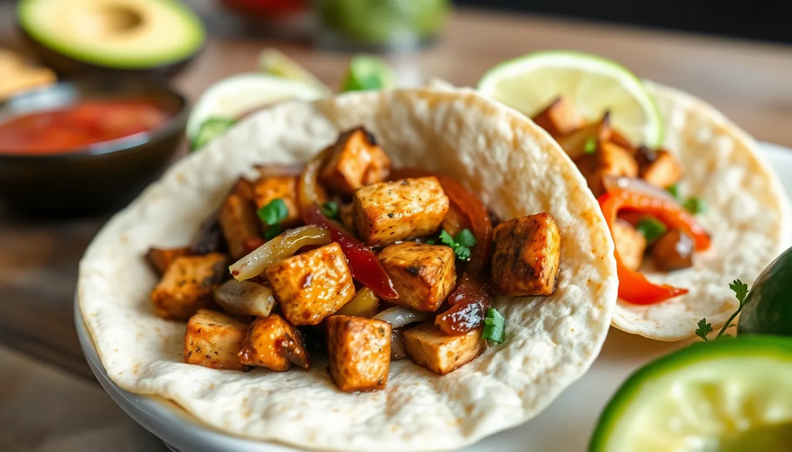

Tofu Fajitas
Prep time: 20 minutes - Cook time: 15 minutes - Total time: 35 minutes
Estimated total cost: $13.80 - Estimated cost per serving: $3.45 - Serves: 4

Ingredients
- 1 block firm tofu, pressed and sliced — $2.50
- 1 medium onion, sliced — $0.80
- 2 bell peppers, sliced — $3.00
- 1 tablespoon oil — $0.20
- 1 teaspoon chili powder — $0.15
- 1 teaspoon cumin — $0.10
- 1/2 teaspoon garlic powder — $0.05
- 1/2 teaspoon paprika — $0.05
- 1/2 teaspoon salt — $0.05
- 4 to 6 tortillas — $2.00
- 1 tablespoon lime juice — $0.15
- Optional: salsa, avocado, or cilantro — $1.20
Estimated ingredient total: $10.05 to $11.25
Displayed planning estimate: $13.80
Detailed Instructions
- Press the tofu for 10 to 15 minutes to remove excess moisture, then slice it into strips.
- Slice the onion and bell peppers into thin strips.
- Heat half the oil in a large skillet over medium-high heat.
- Add the tofu and cook for 5 to 7 minutes, turning occasionally, until lightly browned.
- Remove the tofu and set it aside.
- Add the remaining oil to the skillet.
- Add the onion and bell peppers and cook for 5 to 6 minutes until they soften.
- Add the tofu back to the skillet.
- Sprinkle in the chili powder, cumin, garlic powder, paprika, salt, and lime juice.
- Stir everything together and cook for 2 to 3 more minutes so the seasoning coats the tofu and vegetables.
- Warm the tortillas.
- Fill the tortillas with the tofu fajita mixture and add optional toppings before serving.
Helpful Notes
- Pressing the tofu helps it brown better and improves texture.
- These also work very well as fajita bowls over rice.
- Avocado is optional if you want to keep the price lower.
Price Note
Ingredient prices can vary by store, brand, and region, so these are planning estimates rather than exact totals.